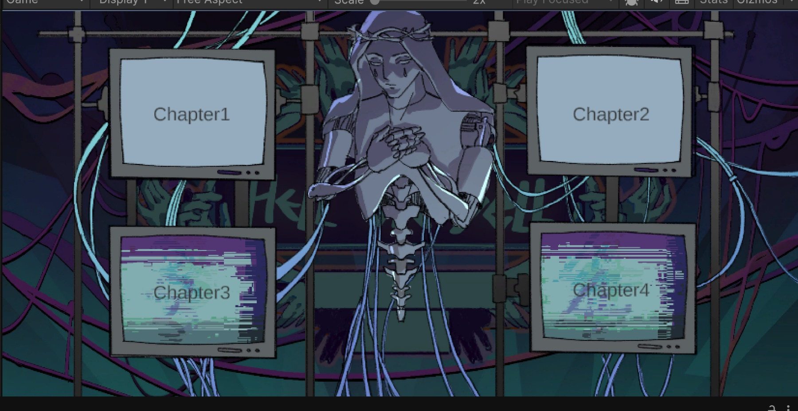
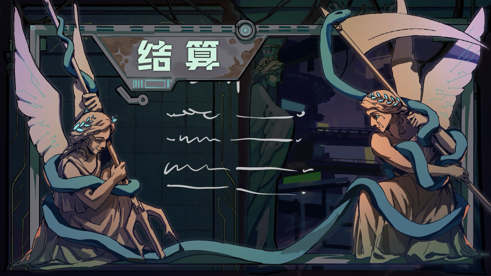

Art direction
We wanted the game to feel like sci-fi with a hellish mood: a dark, underworld take on cyberpunk rather than a clean future. I built the style around two sources, electronic hardware and software (CRT monitors, tangled cables, interface panels) and classical figurative statues, so every screen reads as both machine and ruin.


